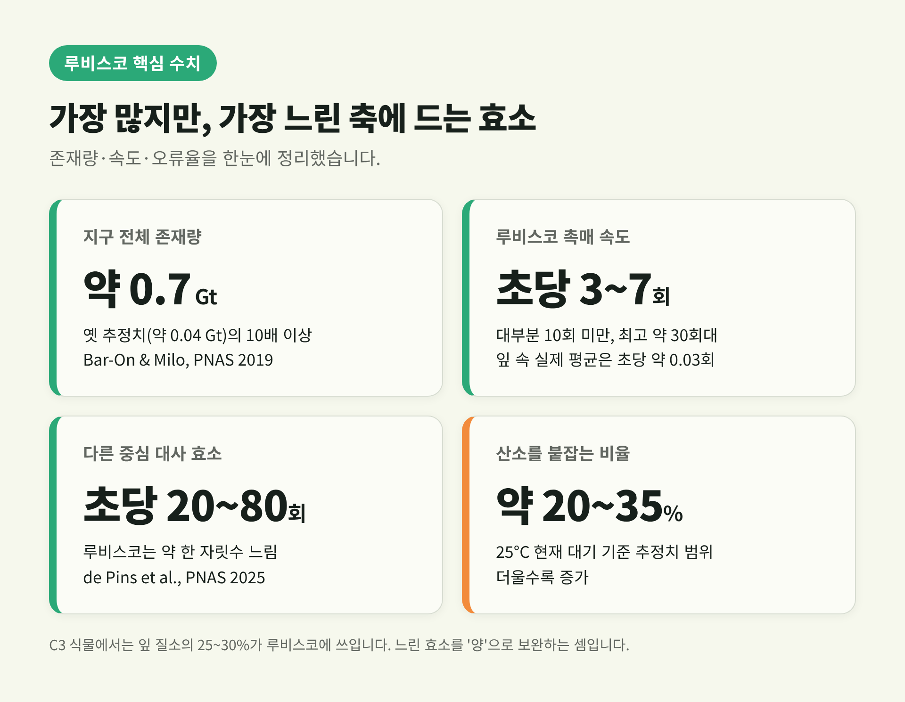
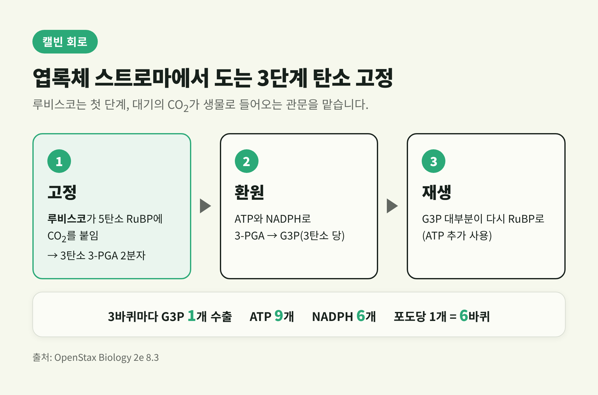
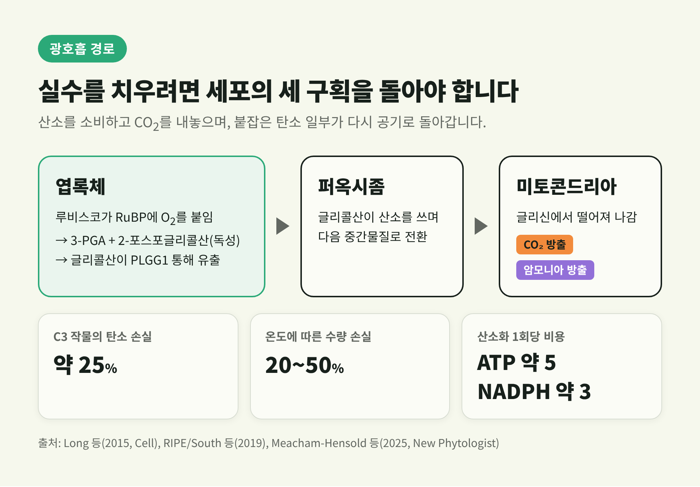
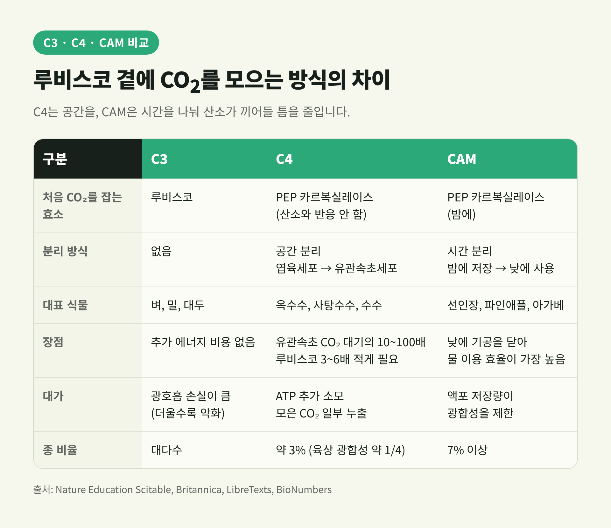
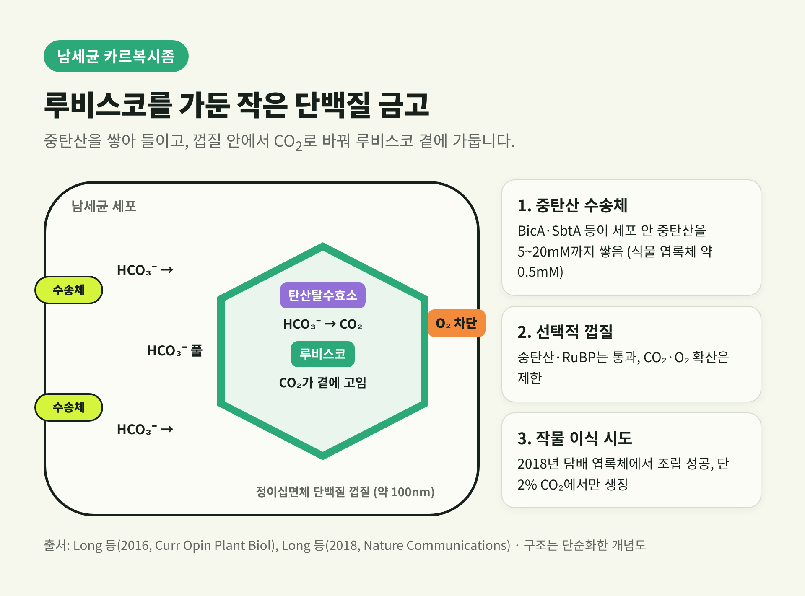
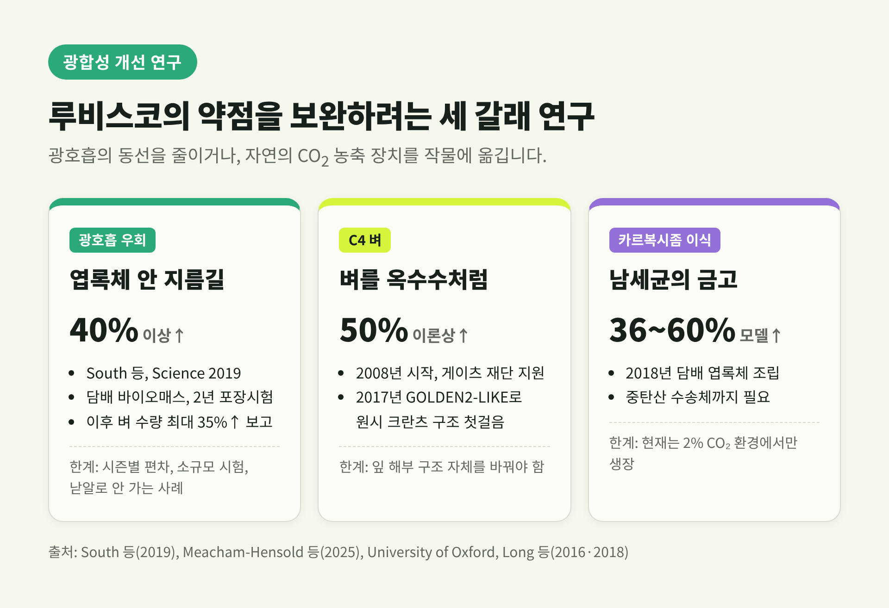

루비스코와 광호흡의 원리 — 광합성 효소는 왜 산소와 이산화탄소를 헷갈릴까
이번 글에서는 광합성의 핵심 효소 루비스코(RuBisCO)와, 그 실수에서 생기는 광호흡을 정리해 보겠습니다. 지구에서 가장 많은 단백질로 꼽히는 효소가 왜 느리고 부정확한지, 식물은 그 약점을 어떻게 메워 왔는지, 사람은 지금 무엇을 고치려 하는지까지 차례로 살펴봅니다.
먼저 요점 세 줄입니다.
- 루비스코는 초당 3~7회 안팎으로 일하는 느린 효소이고, 조건에 따라 반응의 약 20~35%에서 이산화탄소 대신 산소를 붙잡습니다.
- 그 뒷수습인 광호흡 때문에 벼·밀 같은 C3 작물은 동화한 탄소의 약 25%를 잃고, 더운 곳에서는 수량 손실이 최대 50%까지 커질 수 있습니다.
- 옥수수·사탕수수(C4), 선인장·파인애플(CAM), 남세균(카르복시좀)은 모두 "루비스코 주변에 이산화탄소를 모아 주는" 방식으로 이 문제를 풀었습니다.
■ 지구에서 가장 많은 효소, 그런데 느리다
루비스코의 정식 이름은 리불로스-1,5-이중인산 카복실레이스/옥시제네이스입니다. 이름 뒤쪽의 '옥시제네이스'가 이 글의 주인공인 셈입니다.
양부터 보겠습니다. 2019년 이스라엘 와이즈만 연구소의 바-온(Bar-On)과 밀로(Milo)는 PNAS에 지구 전체 루비스코 질량을 약 0.7기가톤으로 추정했습니다. 그전까지 쓰이던 추정치(약 0.04기가톤)보다 한 자릿수 이상 큰 값입니다. 막스플랑크 연구소는 지구의 루비스코를 모두 모으면 인류 전체의 몸무게보다 무겁고, 이 효소가 매년 4,000억 톤 넘는 이산화탄소를 붙잡는다고 설명합니다. C3 식물에서는 잎 질소의 25~30%가 루비스코에 들어갑니다.
다만 "가장 많은 단백질"이라는 표현에는 단서가 붙습니다. 바-온과 밀로 스스로도 그것이 확정된 사실은 아니라고 적었습니다. 그래서 이 글에서는 '가장 많은 단백질로 꼽힌다'고 표현합니다.
문제는 속도입니다. 같은 연구에서 육상식물 루비스코의 최대 속도는 25°C에서 초당 약 3회였습니다. 2025년 같은 연구실이 생명의 계통 전반에서 루비스코 수백 종을 측정한 결과(PNAS, "Rubisco is slow across the tree of life")도 크게 다르지 않았습니다. 30°C 측정 중앙값이 초당 약 7회였고, 대부분 10회를 넘지 못했습니다. 가장 빠른 것도 초당 33회 정도였습니다.
비교 대상이 있어야 실감이 납니다. 세포의 중심 대사를 맡은 다른 효소들은 보통 초당 20~80회 일합니다. 루비스코는 이들보다 약 열 배 느린 셈입니다. 게다가 실제 잎 속에서의 평균 속도는 초당 약 0.03회, 최대치의 1% 수준으로 추정됩니다. 밤에는 쉬는 데다 조건이 늘 최적이 아니기 때문입니다.
식물이 루비스코를 그토록 많이 만드는 이유가 여기 있습니다. 느린 일꾼으로 일을 끝내려면 머릿수를 늘리는 수밖에 없습니다.

■ 캘빈 회로에서 루비스코가 하는 일
광합성은 빛을 받아 에너지(ATP)와 환원력(NADPH)을 만드는 단계, 그리고 그 힘으로 이산화탄소를 당으로 바꾸는 캘빈 회로로 나뉩니다. 캘빈 회로는 엽록체의 기질인 스트로마에서 돌아가며, 세 단계로 이뤄집니다.
- 고정 — 루비스코가 5탄소 분자 RuBP에 이산화탄소를 붙입니다. 그러면 3탄소 분자 3-PGA 두 개가 생깁니다.
- 환원 — ATP와 NADPH를 써서 3-PGA를 3탄소 당인 G3P로 바꿉니다.
- 재생 — G3P 대부분을 다시 RuBP로 되돌려 다음 바퀴를 준비합니다.
회로가 세 바퀴 돌면 G3P 한 분자가 밖으로 나갑니다. 그 대가로 ATP 9개와 NADPH 6개가 듭니다. 포도당 하나를 만들려면 여섯 바퀴가 필요합니다.
대기 중 이산화탄소가 생물의 몸으로 들어오는 첫 관문이 바로 1단계입니다. 이 관문지기가 느리고, 가끔 엉뚱한 손님을 들인다는 것이 문제의 시작입니다.

■ 왜 산소와 헷갈릴까 — 산소가 없던 시절의 설계
이산화탄소와 산소는 크기와 화학적 성질이 비슷합니다. 루비스코의 활성 부위는 둘을 완벽히 가려내지 못하고, 때때로 RuBP에 산소를 붙입니다. 이것이 산소화 반응입니다. 산소에는 탄소가 없으니, 이 반응으로는 몸을 이룰 재료가 늘지 않습니다.
얼마나 자주 일어날까요. 25°C의 현재 대기 조건에서 전체 반응의 약 35%가 산소화라는 추정이 있습니다. 일리노이 대학 연구진은 "약 20%의 경우"라고 설명합니다. 계산 방식과 조건에 따라 숫자가 다르므로, 대략 네다섯 번에 한 번꼴로 보면 무리가 없습니다. 대기 중 산소(약 21%)가 이산화탄소(약 0.04%)보다 500배쯤 많다는 점을 떠올리면 오히려 선방하는 편이라고도 볼 수 있습니다.
이런 효소가 남은 이유는 진화사에서 찾을 수 있습니다. 막스플랑크 연구진은 루비스코가 약 40억 년 전, 지구에 산소가 거의 없던 시기에 등장했다고 봅니다. 대기에 산소가 쌓인 대산화사건은 약 25억 년 전의 일입니다. 처음 설계될 때는 산소를 구별할 필요가 없었던 것입니다.
예전에는 산소가 경쟁자가 아니었습니다. 지금은 공기의 약 5분의 1이 산소입니다. 그 뒤 루비스코들은 이산화탄소 선호를 키우는 쪽으로 진화했지만, 어느 것도 산소 반응을 완전히 없애지는 못했습니다.
2025년 PNAS 연구는 여기에 한 가지 실마리를 더합니다. 빠른 루비스코는 대체로 산소가 적은 환경에 살거나, 이산화탄소를 농축하는 장치를 가진 생물에서 발견됐습니다. 빨리 일하는 능력과 이산화탄소를 꽉 붙잡는 능력이 서로 맞바꿔진다는 '트레이드오프' 가설과 맞아떨어지는 관찰입니다. 다만 연구진은 이것을 직접 증명한 것은 아니라고 선을 그었습니다.
■ 광호흡 — 실수를 치우는 데 드는 비용
산소화 반응은 3-PGA 하나와 2-포스포글리콜산 하나를 남깁니다. 뒤의 것은 쓸모가 없을 뿐 아니라 식물에 독성이 있어 반드시 처리해야 합니다. 이 처리 과정이 광호흡입니다.
광호흡은 세포 안의 세 구획을 거칩니다.
- 엽록체 — 2-포스포글리콜산이 글리콜산으로 바뀌어 수송체(PLGG1)를 통해 밖으로 나갑니다.
- 퍼옥시좀 — 글리콜산이 산소를 쓰며 다음 중간물질로 바뀝니다.
- 미토콘드리아 — 글리신에서 이산화탄소와 암모니아가 떨어져 나갑니다.
결과적으로 식물은 산소를 먹고 이산화탄소를 내놓습니다. 애써 붙잡은 탄소 일부를 공기 중으로 돌려보내는 것입니다. 교과서적 계산으로는 산소화 한 번마다 이산화탄소 0.5분자가 빠져나가고, 그 뒷처리에 ATP 약 5개와 NADPH 약 3개가 듭니다.
손실 규모를 보겠습니다.
- 벼·밀 같은 C3 작물은 광합성으로 동화한 이산화탄소의 약 25%를 광호흡으로 잃습니다(Long 등, 2015, Cell).
- 온도에 따라 C3 작물 수량이 20~50% 줄 수 있다는 추정도 있습니다.
- 미국 기준으로 광호흡은 대두 수량을 36%, 밀 수량을 20% 깎는 것으로 계산됐습니다(Walker 등, 2016).
- 일리노이 대학의 폴 사우스는 미국 중서부에서 매년 광호흡으로 잃는 열량이 최대 2억 명을 더 먹일 수 있는 양이라고 추산했습니다.
더위는 사정을 악화시킵니다. 30°C를 넘고 빛이 강할수록 산소화 비율이 올라갑니다. 가뭄이 들어 기공을 닫으면 잎 속 이산화탄소가 줄어 같은 일이 벌어집니다. 기후가 더워질수록 루비스코의 약점이 더 크게 드러나는 구조입니다.
공정하게 덧붙이면, 광호흡이 순전히 낭비만은 아닙니다. 독성 물질을 치우고 탄소의 상당 부분을 회수하는 필수 정비 과정이기도 합니다. 그래서 연구자들은 광호흡을 없애기보다 '더 짧고 싼 길'로 바꾸는 쪽을 택해 왔습니다.

■ C4와 CAM — 이산화탄소를 모아 주는 두 가지 전략
어떤 식물들은 효소를 고치는 대신 환경을 바꿨습니다. 루비스코 주변의 이산화탄소 농도를 높여 산소가 끼어들 틈을 줄이는 방식입니다.
C4 식물: 공간을 나눈다 (옥수수·사탕수수)
C4 식물의 잎에는 두 종류의 세포가 짝을 이룹니다. 바깥쪽 엽육세포에서는 PEP 카르복실레이스라는 다른 효소가 이산화탄소를 먼저 붙잡습니다. 이 효소는 이산화탄소 친화도가 높고 산소와 반응하지 않습니다. 붙잡힌 탄소는 4탄소 화합물(옥살로아세트산, 이어서 말산)이 되어 안쪽 유관속초세포로 넘어갑니다. 그곳에서 다시 이산화탄소가 풀려나 루비스코에게 건네집니다. 유관속을 화환처럼 둘러싼 이 잎 구조를 독일어로 '크란츠(화환) 구조'라고 부릅니다.
농축 효과는 큽니다. 유관속초세포의 이산화탄소 농도는 대기보다 10~100배, 엽육세포보다 10~20배 높은 것으로 추정됩니다. 덕분에 C4 식물은 루비스코를 C3 식물보다 3~6배 적게 갖고도 일을 해내고, 질소를 더 효율적으로 씁니다.
C4 식물은 관다발식물 종의 약 3%에 불과하지만 육상 광합성의 약 4분의 1을 담당합니다. 이산화탄소가 낮아졌던 약 3,000만 년 전 무렵부터 50~60회 이상 서로 독립적으로 진화했습니다. 옥수수, 사탕수수, 수수가 대표적입니다. 대가도 있습니다. 이산화탄소를 옮기는 데 ATP가 추가로 들고, 모아 둔 이산화탄소 일부가 새어 나갑니다.
CAM 식물: 시간을 나눈다 (선인장·파인애플)
CAM 식물은 같은 일을 하루의 시간으로 나눕니다. 서늘한 밤에 기공을 열어 이산화탄소를 말산으로 바꿔 액포에 저장합니다. 뜨거운 낮에는 기공을 닫아 물을 지키고, 저장해 둔 말산에서 이산화탄소를 꺼내 루비스코에게 줍니다.
관다발식물 종의 7% 이상이 CAM을 씁니다. 선인장, 파인애플, 아가베, 난초, 돌나물류가 여기에 속합니다. 물 이용 효율이 C3·C4 식물보다 높아 건조한 땅에서 강합니다. 아가베의 한 종은 물이 충분할 때 하루 탄소 획득의 75~85%를 밤에 얻는 것으로 측정됐습니다. 한계는 저장 창고의 크기입니다. 액포에 담을 수 있는 말산의 양이 광합성을 제한하기 때문에, CAM 식물은 흔히 두툼한 다육질 몸을 갖습니다.

■ 남세균의 해법 — 카르복시좀이라는 작은 금고
물속의 남세균(시아노박테리아)은 또 다른 방법을 씁니다. 세포막의 수송체로 중탄산 이온을 대량으로 끌어들여 세포질에 쌓아 둡니다. 식물 엽록체의 중탄산 농도가 약 0.5mM인 데 비해, 남세균 세포질은 5~20mM에 이릅니다.
이 중탄산이 들어가는 곳이 카르복시좀입니다. 루비스코와 탄산탈수효소를 단백질 껍질로 감싼 정이십면체 구조물로, 지름이 약 100나노미터입니다. 껍질은 수천 개의 단백질 조각이 타일처럼 맞물려 있고, 중탄산과 RuBP는 들이되 이산화탄소와 산소의 출입은 막습니다. 안쪽의 탄산탈수효소가 중탄산을 이산화탄소로 바꾸면, 그 이산화탄소는 빠져나가지 못하고 루비스코 곁에 고입니다. 산소는 애초에 잘 들어오지 못합니다.
이런 장치 덕분에 남세균은 더 빠르지만 덜 까다로운 루비스코를 써도 됩니다. 앞서 본 속도–정확도 트레이드오프를 환경으로 우회한 사례입니다.

■ 사람이 고치려는 것 — 광호흡 우회로와 C4 벼
광호흡의 지름길 (South 등, 2019)
2019년 일리노이 대학 RIPE 프로젝트의 폴 사우스, 도널드 오트 연구진은 Science에 의미 있는 결과를 냈습니다. 담배 엽록체 안에 세 가지 대체 경로를 넣어, 세 구획을 도는 원래의 긴 경로 대신 엽록체 안에서 글리콜산을 처리하게 한 것입니다. 가장 성과가 좋았던 경로는 녹조류 클라미도모나스의 글리콜산 탈수소효소와 호박의 말산 합성효소를 쓴 조합이었습니다. 여기에 글리콜산이 엽록체 밖으로 나가는 수송체(PLGG1)를 억제해 흐름을 지름길로 몰았습니다.
결과는 2년간의 반복 포장시험에서 확인됐습니다. 광합성 양자수율이 약 20% 올랐고, 여러 계통에서 바이오매스가 40% 이상 늘었습니다. 연구진은 다음 대상으로 대두, 동부, 벼, 감자, 토마토, 가지를 꼽았습니다.
한계도 분명합니다. 실험 대상은 잎을 수확하는 모델 작물 담배였고, 곡물 수량 증가는 보여주지 못했습니다. 세 경로 중 하나는 일부 계통을 왜소하게 만들기도 했습니다. 연구진은 식량 작물에 적용해 규제 승인을 받기까지 10년 이상 걸릴 것으로 봤습니다.
그 뒤의 진전과 과제
2025년 New Phytologist 리뷰(Meacham-Hensold 등)는 이후 성과를 정리했습니다. 감자에서는 폭염이 든 시즌에 덩이줄기 바이오매스가 30% 늘었지만, 온화한 시즌에는 9.5%에 그쳤습니다. 벼에서는 수량이 최대 35%, 다른 경로로는 최대 20% 늘었다는 보고가 나왔습니다. 반면 광합성과 바이오매스는 늘었는데 낟알 수량은 그대로였거나, 결실률이 오히려 떨어진 벼 사례도 있습니다.
리뷰는 남은 과제를 이렇게 짚습니다. 대부분의 시험이 한 지역, 작은 구획에서 이뤄졌습니다. 계절마다 결과가 들쭉날쭉합니다. 늘어난 광합성 산물이 낟알로 가지 않는 문제가 있고, 유전자변형 작물 규제도 넘어야 합니다.
C4 벼 프로젝트
더 큰 목표도 있습니다. 2008년 국제미작연구소(IRRI)를 중심으로 게이츠 재단의 지원을 받아 시작된 C4 벼 프로젝트입니다. 벼를 옥수수처럼 C4로 바꾸면 이론상 생산성이 50% 오를 수 있다고 봅니다. 전통 육종으로 얻는 수량 증가는 연 1% 안팎이고, 아시아에서만 30억 명 넘는 사람이 쌀에 기대고 있습니다.
가장 어려운 관문은 잎의 해부 구조, 즉 크란츠 구조를 만드는 일입니다. 2017년 옥스퍼드 대학 연구진은 옥수수의 GOLDEN2-LIKE 유전자를 벼에 넣어 '원시 크란츠' 구조로 가는 첫걸음을 보고했습니다. 효소 몇 개를 옮기는 것을 넘어 잎의 설계도를 다시 그려야 하는 작업이라, 아직 갈 길이 멉니다.
남세균의 카르복시좀을 작물에 옮기려는 시도도 있습니다. 2018년 호주 연구진은 담배 엽록체 안에서 단순화된 카르복시좀을 조립하는 데 성공했습니다(Nature Communications). 다만 이 식물은 이산화탄소 2%의 특수 환경에서만 자랐습니다. 중탄산 수송체까지 갖춰야 비로소 제 기능을 할 수 있다는 뜻입니다. 모델 계산으로는 엽록체에 남세균식 농축 장치를 완성하면 수량이 36~60% 늘 수 있다고 예측됩니다.

■ 정리하며
정리하면 이렇습니다. 루비스코는 산소가 없던 시대에 만들어진 효소입니다. 느리고, 공기의 5분의 1을 차지하게 된 산소를 완벽히 구별하지 못합니다. 그 결과 생긴 광호흡은 C3 작물이 붙잡은 탄소의 4분의 1 안팎을 되돌려 놓습니다.
자연은 효소를 고치기보다 주변을 바꾸는 쪽을 택했습니다. C4 식물은 공간을, CAM 식물은 시간을 나눴고, 남세균은 작은 금고를 지었습니다. 지금의 연구들도 결국 그 해법을 빌려 오거나 광호흡의 동선을 줄이는 방향입니다.
"루비스코를 바꾸기 어렵다면, 루비스코가 일하는 환경을 바꾼다." 40억 년 된 설계의 한계를 인정하는 데서 출발한 이 접근은, 더워지는 지구에서 식량을 지키는 현실적인 길로 보입니다. 아직 실험실과 시험 포장을 다 벗어나지 못했지만, 그 느린 효소가 언젠가 조금 덜 헷갈리는 날이 올지 묻는다면 충분히 기대해 볼 만하다고 답하겠습니다.
참고자료
- Bar-On & Milo, The global mass and average rate of rubisco (PNAS, 2019)
- Phys.org, Carbon-fixing enzyme 10 times more abundant than previously thought (2019)
- de Pins et al., Rubisco is slow across the tree of life (PNAS, 2025)
- OpenStax Biology 2e, 8.3 Using Light Energy to Make Organic Molecules
- South et al., Synthetic glycolate metabolism pathways stimulate crop growth and productivity in the field (Science, 2019)
- RIPE, South et al. 2019 소개
- Univ. of Illinois IGB, Scientists engineer shortcut for photosynthetic glitch, boost crop growth 40%
- Meacham-Hensold et al., Shortcutting photorespiration (New Phytologist, 2025)
- Walker et al., Annual Review of Plant Biology (2016)
- BioNumbers, Fraction of RuBisCO reactions that are oxygenation at 25°C
- BioNumbers, Fraction of CO2 lost through photorespiration in C3 crops
- BioNumbers, Bundle sheath CO2 concentration in C4 plants
- Jenkins, The CO2 concentrating mechanism of C4 photosynthesis (1997)
- Nature Education Scitable, The Ecology of Photosynthetic Pathways
- LibreTexts (Kimball), Photorespiration and C4 Plants
- Britannica, Photosynthesis — Carbon fixation in C4 plants
- Winter et al., Nocturnal versus diurnal CO2 uptake in Agave angustifolia (J Exp Bot, 2014)
- NASA Astrobiology, This Enzyme Enabled Life to Conquer a Hostile Earth
- Max Planck Society, Back to the future of photosynthesis (2022)
- Long et al., Cyanobacterial CO2-concentrating mechanism components (Curr Opin Plant Biol, 2016)
- Long et al., Carboxysome encapsulation of Rubisco in tobacco chloroplasts (Nature Communications, 2018)
- University of Oxford, Breakthrough in efforts to 'supercharge' rice (2017)
- University of Oxford, Rice to feed the world given a funding boost